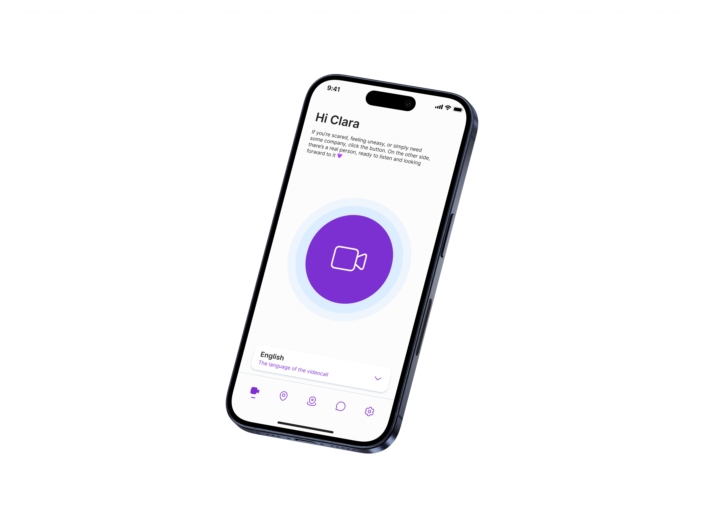
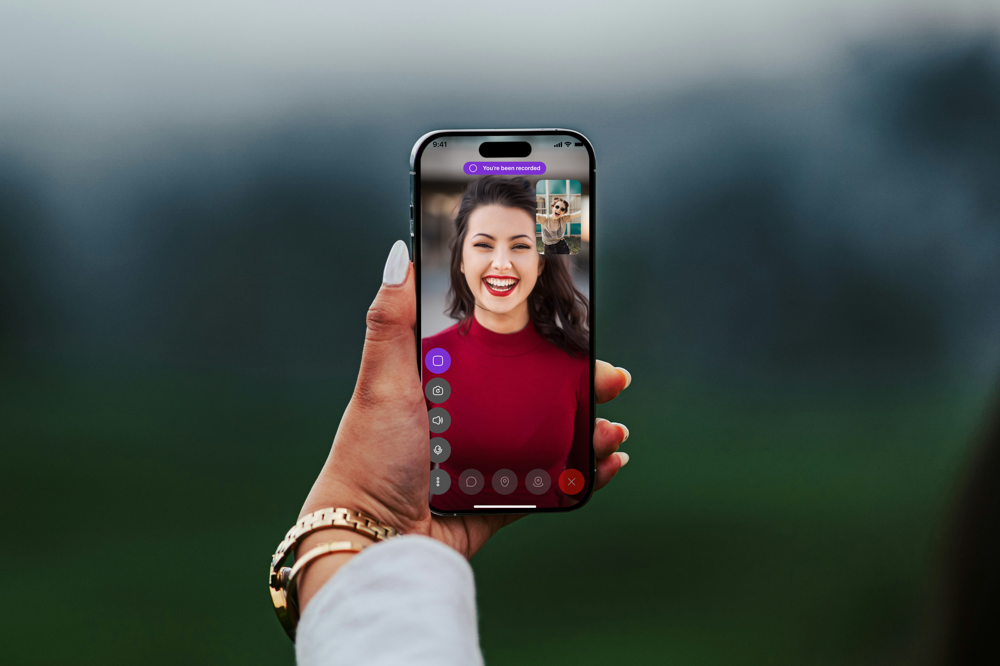
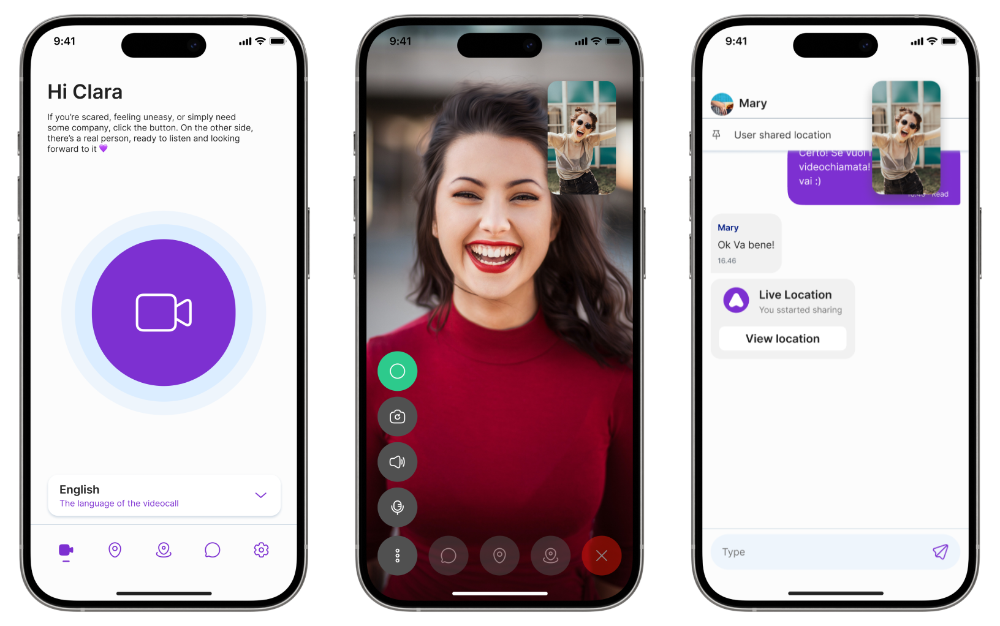
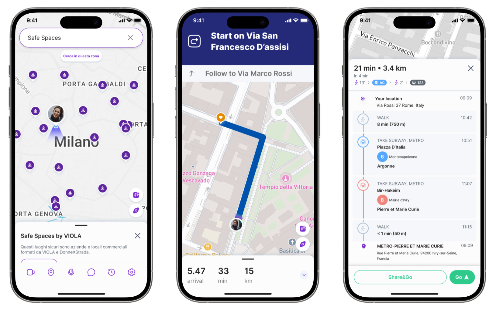
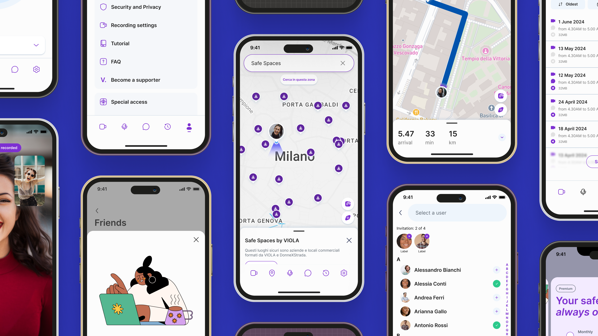
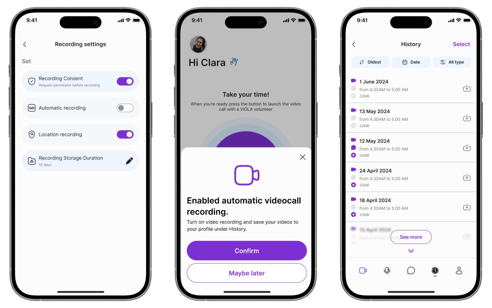

The app that walks you home when no one else can.
As Lead Product Designer, I shaped the end-to-end experience of Viola Walk Home — a mobile app that turns daily commutes into moments of company through real human operators, live video calls, and a network of trusted spaces. The goal: make personal safety part of everyday life, not just an emergency tool.

Walking alone shouldn't feel like a risk.
In Italy, fear of walking alone isn't an exception, it's a daily constant for millions of people.
The data on gender-based violence and perceived safety in public spaces shows a problem that everyday products and services have largely ignored.
- 31.5%
- of people aged 16–70 in Italy have experienced physical or sexual violence in their lifetime (ISTAT)
- 20.2%
- have experienced physical violence
- 21%
- have experienced sexual violence
We designed company, not a panic button.
Most safety apps are built around emergencies — a red button you press when something has already gone wrong. User research told us a different story: people feel unsafe long before anything happens. The fear lives in the walk itself, not in the incident. So we shifted the entire product around a single decision: Viola opens with a video call, not an SOS. Human presence first, intervention only if needed.
The product was shaped through interviews with women who walk home alone at night, sessions with DonnexStrada operators trained in active listening, and iterative testing with users in real-world conditions — at bus stops, on poorly lit streets, after late shifts.
- 20user interviews conducted with women aged 18–55 during discovery and validation
- 4 yrsof continuous product design, from the first release in 2022 to today
- 6core flows designed end-to-end, from onboarding to operator escalation

Key Decision #1 — Video Call as Default
Opening the app with a face, not a panic button.
Every safety app is built around an emergency button — red, central, alarming. Our research told a different story: people want to open Viola before something happens. The bus stop at 11pm. The empty street home. The walk back from a friend's place. So the home screen became one large, purple button that doesn't trigger an emergency — it starts a video call with a real, trained operator who stays with the user during the walk. No sirens, no countdown. Just presence.
- 2K video call sessions handled by operators since launch
- 24/7 human operator availability, every day of the year

Key Decision #2 — Maps & Safe Spaces
A map that shows where you're safe, not where you're in danger.
Traditional safety maps highlight risk: red zones, danger areas, crime statistics. They make users feel watched and afraid before they've even left home. We inverted the logic. Viola's map shows only trusted places — hospitals, police stations, pharmacies, and a network of partner spaces called Viola Points where users can stop and breathe. The street stops being a threat to avoid and becomes a route between safe points. Same data, opposite emotion.
- 900+ Viola Points active across Italian cities — a network of trusted spaces built with DonnexStrada
- Real-time location sharing during calls, fully controlled by the user


Key Decision #3 — Recording as Consent
Recording is the user's choice. Every single time.
Recording during a safety call is a delicate tool: it can protect, but it can also intrude. Most apps either record everything by default (privacy violation) or make it impossible to capture evidence (safety gap). We chose a third path. Recording in Viola is always opt-in, asked for in clear language at the start of each session. The footage is saved in the user's personal archive, encrypted, and accessible only to them. The user decides whether to keep it, delete it, or share it — never the operator, never the platform. Consent isn't a checkbox. It's the design.
- 100% opt-in recording is never triggered automatically — explicit consent required at every session
- End-to-end encrypted archive, owned and accessible only by the user

What four years of presence look like.
- 90K
- Downloads on iOS and Android since launch
- 200
- Trained supporters available in real time
- 2K
- Video call sessions handled by operators
- 4
- Languages supported by the operator network
- 7
- Countries with active users